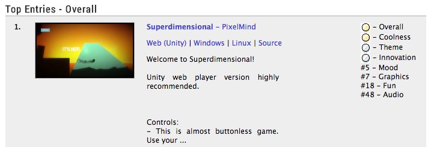
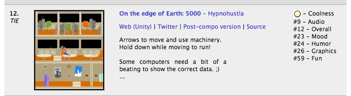
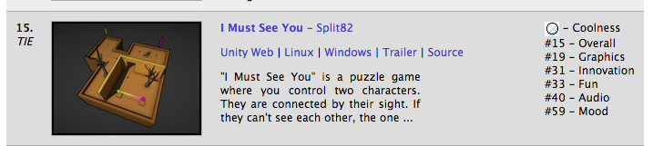
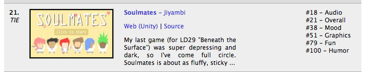

JavaScript is
good now
Talk by Matthew Gatland / @mgatland
¯\_(ツ)_/¯
What about

no mobile version…
no mobile version…
no mobile version…
no mobile version…
Unity makes it easy, but not that easy…
JavaScript is different.
What if I could tell you...
- You can make a game today
- And release it on iPhone tonight
What if I could tell you...
- You can learn ONE progamming language
- And release on EVERY platform
- (no more Xcode!)
* M A G I C *
Our goals
- iPhone, Android, Windows, Mac
- One language for all - not one language per platform
- No complex tools, no buggy engines, no expensive licences…
Is JavaScript good enough?
- graphics
- framerate
- audio
- touch
- networking
- distribution
- …
Distribution (part 1)
- We put our game online - it's a website.
- People access it through their web browser.
- It's quick and easy, but hard to promote and monetize.
- App store? We'll come back to that.
Graphics
Make a webpage with a canvas.
Draw to the canvas using JavaScript.
two options:
* canvas 2D: easier, works on more devices, but slower
* WebGL: powerful, 3D or 2D, fast, works on newer devices
examples go here
show an example
browser support
framerate
requestAnimationFrame()
calls your code at 60fps (every time the screen repaints)
Before this, there was _no_ accurate timing in javascript.
browser support
example, thing bouncing back and forwards.
example, using setInterval, for comparison. Side by side.
full screen
On mobile, it's annoying when your game runs in a browser.
You get all this junk all around it
(browser junk)
On Android, go full screen like this:
On iOS, go full screen like this:
browser support
iOS is a bit buggy when you rotate the screen :/ it scrolls your page down. Hacks to fix, hopefully Apple will fix it soon.
graphics END
So we can draw at 60fps, on every platform, we can do 2d or 3d, and we can go full screen even though we're just a website. This is a good start.
Audio
Previously, iOS audio support was bad as.
Now it's good - we can play multiple channels, volume, special fx, mix sounds, everything.
code example
browser support
Audio - iOS hacks
on iOS, a web page start muted.
They unmute if a sound is played _as a result of a user action_
Workaround: say 'tap here to begin'
When the user taps, play a sound (and sound)
audio is now unmuted.
Keyboard
example
We return false to cancel the browser's default behaviour (scrolling with arrow keys, zooming in and out, going back to the previous page)
I don't like the event system messing with my game, so I use a class to convert event-driven keyboard to a set of flags I can check.
example
browser support: everything
Mouse
it's pretty similar.
Touch
touch events are similar.
browsers do weird stuff with touch, like the 300ms delay on iOS.
You can fix this.
browser support
So far
Now we have a game with graphics, audio, and controls for mobile and desktop.
Next, some network code.
Network
Networking is a little complex so I'm using a framework - socket.io
First, we add it to our website.
Now we connect to our server.
This is how we send a message
This is how we recieve a message.
browser support
Network limitations
It's all TCP. We can't do UDP (unreliable) unfortunately.
Network #2
WebRTC lets us make P2P connections between two web browsers.
It also lets us make unreliable connections.
browser support:
It's not supported on iOS yet :(
So no WebRTC goodness yet in our cross-platform games.
The browser problem
Distributing your game as a website is super easy.
You can paste the URL anywhere to let people play your game.
This is a super great way to share a game. For example, Gridland and 2048 are shared this way.
The browser problem
However, if you want to sell your game, you probably need to be in the App Store.
Fortunately this is really easy:
Cocoon.js
* Cocoon.js will wrap your game and turn it into an app (iOS + Android)
* There service is easy to use, and free (for now...)
* but we don't know how much they will charge later.
* And they add a splash screen
It only takes a few minutes to test your game.
You download the cocoon.js launcher app
You create an account
You type in your game's URL
Cocoon.js Launcher now launches your game as an app
It works!
No browser chrome
Note: To really make your game into an app, you need to draw icons, sign up as a developer, get a signing key, all that annoying stuff. Submit and wait for approval. Unfortunately there's no way to avoid this if you want to be in the app store.
PhoneGap
* PhoneGap is Open Source, so they can't screw you by changing the price.
* no splash screen
* But it might take longer to set up.
* I promised we wouldn't install any tools, so we're not going to do this.
A warning
We're using the latest features. Apple has only just started supporting them
Your games will only work for people who keep their iPhone\iPad up to date.
Also, browser support always lags behind native app support. If you want to access the camera, accelerometer, microphone, and GPS, you can - but you might get fewer options than you'd get from a native app.
Mobile Notifications?
Game Center?
PhoneGap might have a plugin for you. If it doesn't, you're have to make one - so you're back to writing and debugging native code :(
Conclusion
You can make a game today that people can play on every platform.
You can distribute it on the web with NO DRAMA
You can put it in the app store with MINIMUM DRAMA
Unlike Unity or Monkey, which translate your game into a different programming language for each platform, your game is written in JavaScript and stays in JavaScript.
This means you'll never get weird error messages coming from a tool chain that you don't understand.
But wait, how do I learn JavaScript?
JS is the most popular language in the world. Just google. Stack Overflow is a great place to ask questions.
Pretty Code
code code code